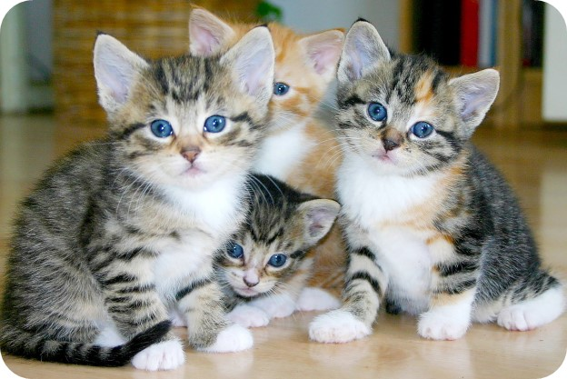
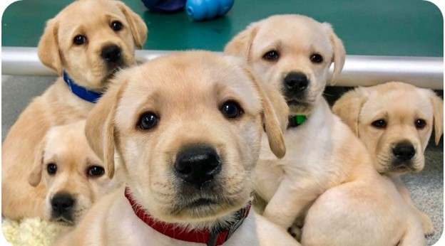
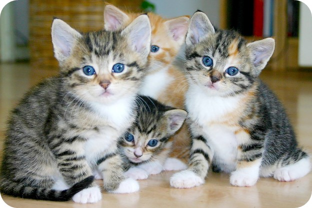
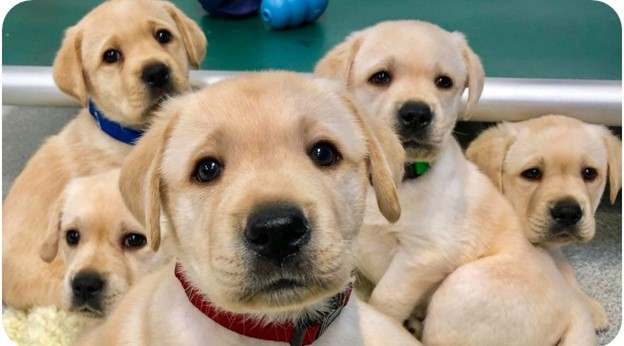

Whiskers and Wags Adoption Co.


 



At our pet adoption service, we are dedicated to helping find loving homes for cats and dogs in need. Our mission is to connect animals in need with families who can provide them with the love, care, and attention they deserve. Whether you are looking to adopt your first pet, or are a seasoned pet owner, we are here to help make the adoption process as smooth and stress-free as possible.
Our team of experienced and compassionate pet adoption specialists work tirelessly to ensure that each and every animal in our care finds the perfect home. We understand that finding the right pet can be a big decision, and that's why we take the time to get to know each and every one of our animals, so that we can match them with the right family based on their individual personalities, needs, and lifestyles.
In addition to our adoption services, we also offer resources and support to help families ensure that their new pet is a happy and healthy member of their family. From training and behavior advice, to veterinary care and nutrition information, we are here to provide you with the tools and resources you need to give your new pet the best life possible.